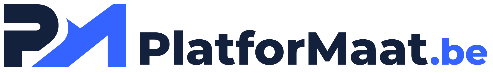

Eerst jouw verhaal.
We bespreken je doelen, gebruikers en huidige werkwijze. Wat moet beter? En wat werkt al goed?

Jij kent je onderneming.
Wij bouwen de software die haar verder brengt.
Websites, apps en slimme systemen. Ontworpen rond jouw mensen, processen en ambities.
Laten we kennismakenVan die ene handmatige taak tot het platform waar je hele onderneming op draait.
Ontdek wat mogelijk is
Jouw platformPRECIES ZOALS JIJ WERKTAls fullservice softwarepartner denken, ontwerpen en bouwen we mee. Voor één gerichte oplossing of een volledig digitaal platform.
Een klantenportaal, planningstool of intern systeem dat aansluit op wat je team écht nodig heeft. We brengen je processen samen in software met een duidelijke structuur.
Van een heldere bedrijfswebsite tot een webshop of mobiele app. We combineren een herkenbaar ontwerp met gebruiksgemak, toegankelijkheid en aandacht voor snelheid.
We onderzoeken waar AI je werk echt kan vereenvoudigen. Met aandacht voor de kwaliteit van antwoorden, gevoelige gegevens en de momenten waarop een mens de controle houdt.
Laat de systemen die je al gebruikt beter samenwerken. We verbinden gegevens, automatiseren terugkerende stappen en maken informatie bruikbaar in overzichtelijke dashboards.
Je hoeft nog geen uitgewerkt plan te hebben. Samen maken we de vraag scherp, toetsen we de haalbaarheid en vertalen we je idee naar een ontwerp dat je kunt uitproberen.
Software blijft evolueren. We spreken af hoe je toepassing wordt gehost, onderhouden en opgevolgd, en hoe we nieuwe wensen toevoegen zonder het overzicht te verliezen.
Zo kan maatwerk er in de praktijk uitzien. Verken drie voorbeelden en ontdek het verschil in je werkdag.
Illustratief voorbeeld · geen echte klantgegevens
Korte lijnen, begrijpelijke keuzes en zichtbare voortgang. Je weet wat we bouwen, waarom we het bouwen en wat de volgende stap is.
We bespreken je doelen, gebruikers en huidige werkwijze. Wat moet beter? En wat werkt al goed?
Je krijgt een afgebakend voorstel met ontwerp, planning en budget. Zo maken we bewuste keuzes vóór de bouw.
We bouwen in overzichtelijke stappen. Jij kijkt mee, probeert uit en geeft feedback op echte voortgang.
Na de lancering volgen onderhoud, ondersteuning en uitbreiding volgens onze afspraken.
De beste software begint
bij goed luisteren.
Geen onderneming werkt precies hetzelfde. Daarom begint ons werk bij jouw mensen en processen. We bouwen wat nodig is en houden ruimte voor wat later komt.
Vertel ons hoe jij werktNee. Een probleem dat je wilt oplossen of een eerste idee is genoeg om te starten. Samen bepalen we wie de software gaat gebruiken, wat die moet doen en welke eerste stap zinvol is.
Dat onderzoeken we eerst. We bekijken de huidige techniek, documentatie, toegangen en eventuele licenties. Op basis daarvan adviseren we over uitbreiden, koppelen of gericht vervangen.
Dat hangt af van de omvang, koppelingen en complexiteit. Na de verkenning maken we een voorstel met een duidelijke scope en begroting. Hosting, externe diensten en onderhoud benoemen we apart, zodat je ook de terugkerende kosten kent.
We leggen vooraf vast hoe broncode, accounts, gegevens en gebruiksrechten worden overgedragen. Ook eventuele externe licenties en de voorwaarden voor onderhoud maken we expliciet.
PlatforMaat richt zich op softwareontwikkeling en het beheer van de toepassingen die we bouwen. Beveiliging is onderdeel van dat ontwikkelwerk. Algemeen IT-beheer, werkplekbeheer en gespecialiseerde cybersecurity vallen buiten dit aanbod.
Een nieuw idee, een lastig proces of software die beter kan. Vertel het ons.
info@platformaat.be +32 483 85 13 22